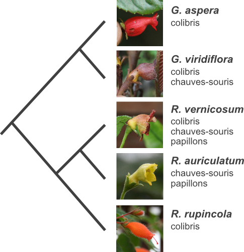

Notre laboratoire s'intéresse aux circonstances et aux implications génétiques et écologiques relié à l'évolution de différents systèmes de reproduction.
 Notre laboratoire étudie l'évolution des systèmes de reproduction dans le groupe comprennant les genres Gesneria et Rhytidophyllum, qui fait partie de la famille de la violette africaine (Gesneriaceae). Le groupe est endémique aux Antilles et aucune espèce se retrouve sur le continent américain.
Les travaux de Silvana Marten-Rodriguez ont démontré que les espèces du groupe montrent une grande variété de mécanismes de pollinisation. Certaines espèces, aux fleurs tubulaires rouges, sont pollinisées par des colibris, alors que d'autres sont pollinisées par des chauves-souris ou des papillons de nuit. Ces dernières ont des fleurs pâles et produisent leur nectar la nuit. D'autres espèces sont généralistes et ont la capacité d'attirer tous ces pollinisateurs. Silvana Marten-Rodriguez a démontré que l'ancêtre du genre était pollinisé par les colibris, mais l'évolution de systèmes de pollinisation par des chauves-souris ou des papillons de nuit est survenu à plusieurs reprises. À cause de ces particularités, ce groupe est idéal pour étudier l'évolution des système de reproduction. Nos recherches visent à comprendre comment ces transitions surviennent et pourquoi elles surviennent si fréquemment.
Un de nos objectifs est de déterminer les bases génétiques des transitions entre les systèmes de reproduction. En étudiant des croisements artificiels entre espèces possédant différents systèmes de pollinisation, nous allons déterminer combien de gènes sont responsables des changements morphologiques entre les différents types de fleurs. Cela nous permettra de mieux comprendre comment ces changements ce sont produits. Une de nos hypothèses est que les changements impliquent un petit nombre de gènes. En effet, le contraire suggérerait que les changement d'un type de fleur à l'autre seraient complexes et donc rares, ce qui n'est pas ce que l'on observe.
Nous tenterons aussi de comprendre le contexte écologique de ces changements. Par exemple, est-ce que les transitions entre systèmes de pollinisation peuvent être reliés à des changements climatiques antérieurs qui auraient affecté les populations de pollinisateurs? Ou est-ce que les transitions coïncident avec des événements de migration? Ce sont des questions que nous tenterons de répondre en reconstruisant l'arbre généalogique des espèces.
Ces analyses devraient nous aider à mieux comprendre l'origine de la diversité florale des plantes. Sur une note plus pratique, ces recherches devraient aussi nous aider à mieux protéger la biodiversité en nous aidant à mieux comprendre comment les plantes réagissent à des changement écologiques, comme ceux engendrés par des changements climatiques. Ces études sont particulièrement importantes dans les régions tropicales puisque bien qu'elles abritent une grande diversité, les régions tropicales sont néanmoins caractérisées par de hauts taux d'extinction.
John L. Clark, U Alabama, USA
Silvana Marten-Rodriguez, Inecol, Mexico